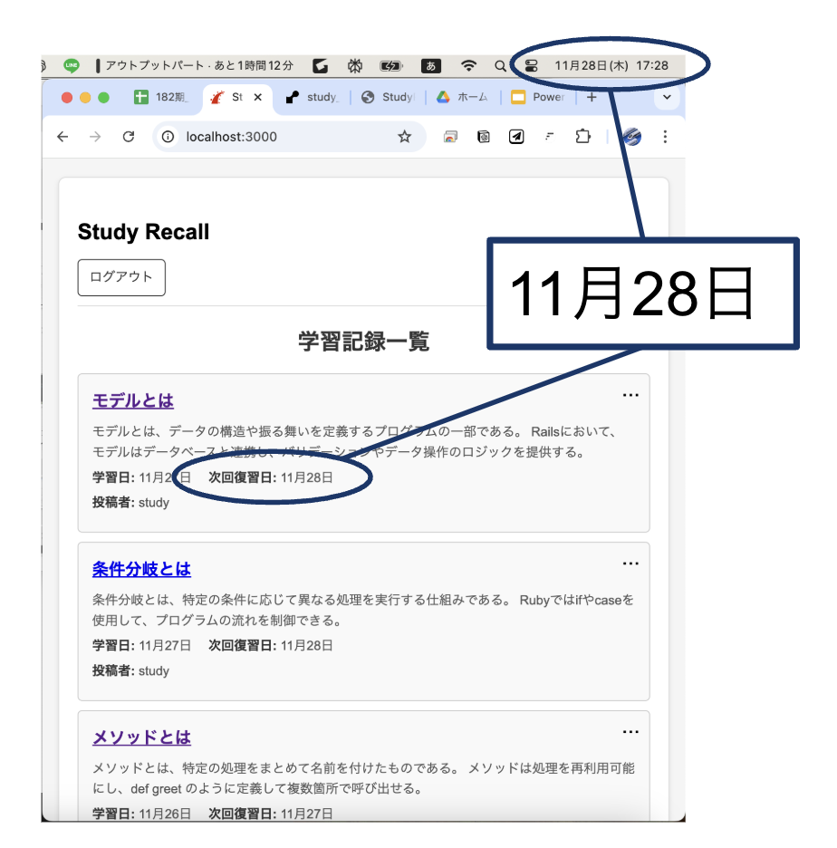

Study Recall（学習継続サポートアプリ）
開発環境
Ruby / Ruby on Rails / MySQL / GitHub / Visual Studio Code
-
概要
制作時間 56時間 URL https://study-recall.onrender.com/ ID admin PASS 2222 -
動作テスト
テスト用アカウント
mail test@gmail.com PASS study_recall
OUTLINEアプリケーションの概要
オリジナルアプリケーションとして、学習継続サポートアプリを開発しました。主な機能は２つあります。
１つ目は学習を記録として投稿する機能です。タイトル、テキスト、画像が投稿できます。
２つ目は復習サポート機能です。学習から適切な復習の日付を算出し、復習日になると投稿一覧のトップに表示されます。
-
開発に至った経緯
学習を継続できない課題を解決するために作成しました。
学習を継続するには、学習内容を覚えているという成長実感が大切です。
そこで、効果的な復習のタイミングで過去の学習を表示することを主機能としたアプリを制作しました。
-
開発で工夫したこと
1.復習予定日の投稿を優先表示
・本日どの学習を復習すれば良いか学習者にわかりやすくするため
・トップに表示することで復習を実行しやすくするため2.復習完了日から次回復習日を起算
・学習できなかった日があっても、後の復習日がずれ込まない
・後の復習日がずれ込まないことで、継続的に取り組むモチベーションを維持できるようにする -
今後実装したいと思っていること
現在、投稿の優先順位は日付が変わらないと更新されない仕様となっています。この点を改善し、投稿一覧が動的に更新されるように変更します。
この改善により、ユーザーは次に取り組むべきタスクを直感的に把握し、学習の優先順位を効率よく管理できるようになります。
また、検索機能やフィルター機能を実装することで復習日でない学習についても振り返りやすくすくしたいと考えています。